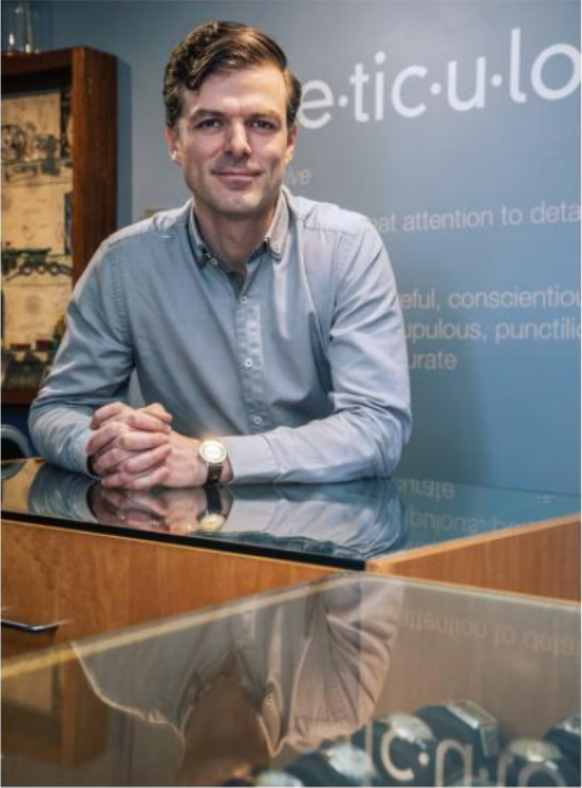

A sturdy, utilitarian Swiss timepiece, it's been on my wrist for more than two decades, keeping me punctual for interviews and making sure I never missed a flight, long before the ubiquitous smartphone became the preferred method for checking time.
How I broke a little hole in the crystal I really don't know, but there it was, the tiny shards of crushed glass dancing across the watch face like a snow globe.
It wasn't a good day for my watch — the red second hand stopped in its tracks — but it did lead to a fortuitous meeting with a gaggle of young watchmakers and a glimpse into the amazing world of watch collectors.
When I first stepped into Victoria's Meticulous Modern and Vintage Watch Repair, I was immediately struck by the group of youthful experts in the crowded downtown shop, all bent over the task of servicing wristwatches. They spirited my old Sigma away and a few days later had it restored with a new movement and shiny crystal, hopefully to live to tell the time for another decade or so. They also opened my eyes to the fascinating world of watches - the beauty and history of mechanical movements, the "quartz crisis” of the 1980s that nearly eclipsed the time-honoured art of horology, and the hot new market for old-fashioned, ticking timepieces. From the ebullient Tara Trudel and her young colleague Levi Sinclair, to shop owner and expert watchmaker Jonathan Mossop, Meticulous is ground zero for watch geeks. Not only can they quote chapter and verse on almost any watch ever made, they can fix them, even if it means hunting down or fabricating old, rare, irreplaceable parts. With the time displayed on every electronic device we carry these days, it's surprising to learn that the oldfashioned watch repair business is booming
46 DOUGLAS
I envisioned the Norman Rockwell image of a watchmaker, an aging gent surrounded by clocks and buckets of watch parts, peering through a loupe while tinkering with a tiny timepiece. That's what you would have found here for most of the last 30 years, when it was home to Edwin's Clocks and Watches and the beloved watchmaker Edwin Lee. Mossop and Trudel both learned their skills from Lee – Trudel worked alongside him here for several years. Mossop befriended Lee and, under his tutelage, was soon restoring rare watches and selling them online, eventually becoming a skilled watchmaker himself.
+ A Swiss-made, 1940s Minerva chronograph caliber 20CH in for repair at Meticulous Modern and Vintage Watch Repair.
+ Expert watchmaker and Meticulous owner Jonathan Mossop trained with renowned Victoria watch expert Edwin Lee, who had designed watches in Hong Kong before moving to Victoria where he ran his watch business for 40 years.
When Lee died in 2016, Mossop took over and opened Meticulous in the tiny space, providing a bricks-and-mortar home for his virtual vintage watch store, styleintime.com. It's an extension of his main watchmaking studio, inside the historic Francis Jewellers, where more vintage watches are on display. Whether it's a sleek Longines Mystery Dial Automatic, circa 1960, or a rare Movado Diver's Chronograh, Mossop buys, restores and sells watches of all kinds too. "Vintage watches never seem to go out of style," he says, recalling the sleek 1930s tank watch that first lured him into the world of collecting. "They convey that unique sense of history and rarity — and they are fascinating little micro-machines."
When the battery-operated quartz movement flooded the market with cheap and reliable
watches in the 1970s, it looked like the finicky, mechanical watch might finally be consigned to the dustbin of history. But it lived on, especially in the luxury brands like Rolex, Patek Philippe, Omega and Cartier, still among the world's most sought-after, collectible watches. A quartz watch is a more reliable timekeeper, but there's still a lot of love for these mechanical marvels. In fact, collecting watches is the new hot hobby of the rich and famous. Ellen DeGeneres and Eric Clapton are horology hounds — both collectors of iconic Rolex watches. Charlie Sheen has a multi-million-dollar collection, including a rare Patek Philippe Perpetual Calendar worth a cool $700,000. And the big news this year was the record sale of a vintage watch at auction for $17.8 million — the famous Rolex Cosmograph Daytona that Joanne Woodward gave her movie star husband Paul Newman back in 1968.
Thanks to modern computer connections,
it's easy to browse the world for rare, unique and luxury timepieces. You'll find brand ambassadors, bloggers, reviewers and retailers to help you hone your hobby. There are also watch collector clubs like the cultish RedBar Group, a New York City-based watch collectors' club with chapters around the world. Here in the capital, there's the Victoria Watch Collective, a group of local collectors who meet several times a year to buy, sell and share their passion for high-end horology. I find the Victoria Watch Collective at one of their regular meetings at a downtown hotel. As the sun sets over the inner harbour, a group of mostly men gather for an informal "showand-tell," arranging their coveted collections on tables around the room, sipping cocktails and talking timepieces. Bill Naughton, Victoria's former deputy police chief, displays 10 of his favourite wristwatches in a glass-topped wooden display
DOUGLAS 47